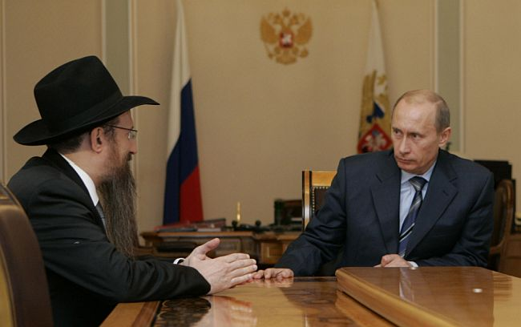

The Long Shabbos Walk Heard Around the World

In a restaurant near the Marina Roscha shul sat dozens of bachurim from Tomchei T’mimim in Ohr Yehuda. They were there with their fathers and farbrenging with their teachers and rosh yeshiva, Rabbi Sholom Ber Hendel. There were niggunim and words of chizuk to prepare them for their trip to the Rebbe. This took place this past winter.
At about 1:00 in the morning, in walked Rabbi Berel Lazar, Shliach and Chief Rabbi of Russia. He had been asked to come and farbreng with the talmidim.
For two hours he spoke inspiring words about hiskashrus and love for the Rebbe. It was already three in the morning and he was ready to leave when one of the participants said, “Before you go, we want to hear your story about shmiras Shabbos. What happened that Friday?”
R’ Lazar smiled and despite his tiredness, he sat back down and told the story.
PART II
It happened four years ago, in 5773. He got a phone call in his office from a senior official in the Kremlin who wanted to talk to him.
The Russian government was going to mark seventy years since one of the significant battles of World War II between Russia and Germany. The Battle of Kursk was an unsuccessful German offensive against the Soviet Union. It was the largest tank battle in military history and was a turning point in the war between these two mighty armies. Russia marked the victory every year with a ceremony attended by leaders in the government including the President, Vladimir Putin. This year the Chief Rabbi was asked to join.
“Where will the ceremony take place?” asked R’ Lazar.
“In the city of Belgorod.”
“On what date?”
As they spoke, R’ Lazar looked at the calendar and saw that the festivities would be taking place on a Friday.
“I cannot attend,” he said apologetically. “It’s a Friday and I celebrate the Sabbath that evening. It’s a holy day for us Jews and we cannot travel.”
“Okay, thank you,” said the official.
Several hours later, the official called back and said, “We must have you attend.”
“Why?”
“The president himself asked that you attend.”
R’ Lazar knew that if Putin was making this request, he had to treat it seriously.
“Can the ceremony be moved back to Thursday?”
The official asked, “How can we move up our victory that took place seventy years ago by one day?” and he laughed, amused by his own joke.
“I have a problem,” said R’ Lazar. “I am Jewish and I cannot travel on Saturday. According to my calculations, the ceremony will end too late on Friday to allow me to fly back to Moscow before the Sabbath begins.”
R’ Lazar made his point firmly and the official said he would get back to him with an answer.
A few hours later, the official called back. Putin heard about R’ Lazar’s problem and he wanted to honor his religion, and so he moved back the time for the ceremony so it would be earlier on Friday. This would enable the rabbi to fly back to Moscow before the Sabbath began.
R’ Lazar could not refuse and he calculated that the flight took one hour and he could make it back in time if all went as planned. He officially confirmed his attendance at the government event.
However, he knew that despite the promises, things could go awry. He knew, for example, that Putin was late for events. He couldn’t do anything about it other than pray that it would all work out well.
It was apparent that President Putin was being considerate of his concerns, for he was “only” one hour late for the event. In his speech he mentioned that he was being brief due to the religious needs of the rabbi of the Jewish community. Shortly after the president concluded his speech, the government event was over.
R’ Lazar looked at his watch and saw that all was well and he still had time to get back to Moscow before Shabbos arrived. One of the officials brought him to the ramp of the plane that would be taking him back to Moscow.
The plane filled up with many important government figures, the political and security leadership of Russia, including the head of military intelligence, the head of foreign intelligence, the chief of staff, ministers and other dignitaries.
But for some unknown reason, the plane did not take off. R’ Lazar looked at his watch and was a little concerned.
“Why aren’t we taking off?” he asked someone.
“We are waiting for Nikolai Patrushev.”
R’ Lazar knew that Patrushev served as Director of the Russian Federal Security Service (the successor to the KGB). He was second in importance in Russia to the president. He was late and all attempts at reaching him failed.
“They promised me that we would get back to Moscow before the Sabbath,” R’ Lazar said with some urgency to the person in charge of the ceremony who could only shrug and say, “We cannot take off without him.”
After a long wait, a convoy of cars drove up and Patrushev got out and boarded the plane.
The doors were shut and R’ Lazar breathed a sigh of relief. Time was pressing but there was still enough time left to make it to Moscow before sunset.
The plane began making its way down the runway. The passengers were buckled in. The plane then waited and waited. R’ Lazar impatiently listened out for the sound of the roar of the engines and the forward motion that would lift them up above the ground but time passed and nothing happened.
R’ Lazar realized there was a problem. Two minutes later they learned that during the ceremony there had been a military helicopter show with an acrobatic performance. Air traffic control did not allow their plane to take off until the last of the helicopters landed. It would take a while.
R’ Lazar got up determinedly and went over to the person in charge.
“I must get off the plane,” he said. “You promised that we would return to Moscow before sunset and I see that won’t be happening. I want to get off and spend the Sabbath here.”
“You cannot get off the plane now,” said the man uncomfortably. “When the plane is on the runway, the doors cannot be opened.”
“Then take the plane back to the terminal,” requested R’ Lazar.
“We cannot do that for security reasons,” he said.
R’ Lazar insisted and finally, the pilot came out, having heard about the situation. He understood R’ Lazar’s problem and looked at his watch. After a pause he said, “Stay here with us and I promise you that we will land in Moscow before sunset. Take my word for it.”
“I believe you, but you should know that if we are late, I will not be allowed to disembark until tomorrow night. I will have to spend the Sabbath in the plane.” The pilot repeated his promise that they would land before sunset and R’ Lazar agreed to sit back down. A few minutes later the wheels began to move and the plane was airborne.
“I could not help but feel that the pilot was making the greatest effort to get me home on time. The plane literally shook from the speed of the engines and it was a little scary.”
During the flight, a conversation ensued between security personnel and the rabbi. R’ Lazar told them that he would have to walk from the airport to his home, entailing hours of walking.
“Don’t worry, rabbi. If you don’t make it in time, we will ‘kidnap’ you into one of our cars and you will only notice when we let you off in front of your house,” said the head of security with a wink. “Nobody could blame you for desecrating your holy day.”
PART III
The plane touched down a few minutes before sunset. It was a difficult and dangerous landing. It was obvious to all that the pilot landed too quickly, in order to keep his word to the rabbi.
The Russian ruling class gave the Jewish rabbi much honor (who would have believed?) and he got off first. At the last minute before sunset he called home to say he had landed safely but they shouldn’t wait for him because he would be walking home.
Although the airport was in Moscow (so there was no t’chum Shabbos problem), it was a long way home. Having no choice, he began walking. He had a bodyguard who faithfully escorted him. Now and then they stopped at gas stations where R’ Lazar rested a little while the bodyguard bought himself something to eat and drink. Since R’ Lazar hadn’t made kiddush yet, he did not eat.
R’ Lazar walked for seven and a half hours in the dark. He hadn’t realized that the 30-kilometer walk would take so long.
“During the first few hours I reviewed sichos that I remembered, maamarim, and other topics in learning, but in the latter hours it became too hard.”
He arrived home at six in the morning. It was still night in the streets of the capital. He hurriedly made kiddush and broke his long fast since Friday morning.
After two or three hours of rest he got up and went to Shacharis. Before he left the house, he told his wife not to tell anyone what happened to him. He was afraid lest people learn the wrong lesson, that it was okay to set out on a trip at the last minute.
When he arrived at shul, he realized that everyone knew what happened. His children, who knew that he called when he landed, told people in shul on Friday night and word spread. They all asked him about the experience of walking through the night. R’ Lazar, seeing that it wasn’t a secret, described it all in detail, including his doubts and hesitations. He wanted to convey the message – don’t venture forth on a Friday so you don’t desecrate the Shabbos.
When it was time for his Shabbos drasha (speech) he told the story in detail, that he did not want to attend the ceremony but had no choice. He explained how he figured that he would return home with ample time before Shabbos but unexpected delays got him into a pickle.
When he finished, everyone stood up and applauded in his honor.
On Motzaei Shabbos, someone wrote up the story and spread it via WhatsApp. The story reached the Russian media, and many outlets reported about how the Chief Rabbi had to walk more than seven hours to get home. About 140 million Russians were exposed to the story.
Many Jews were touched by the story, including those who did not attend shul regularly. His office received dozens of phone calls from Jews who said that for years they would go to shul on Shabbos and holidays by car, but this story shook them up and they said – if the Chief Rabbi can walk for so long, then they too, could walk to shul.
The story made a great kiddush Hashem among many Jews.
(Thank you to Rabbi Sholom Ber Hendel who told me the story that he heard from Rabbi Lazar.)
Menachem Ziegelboim. "The Long Shabbos Walk Heard Around the World." Beis Moshiach, no. 1074 (June 29, 2017).